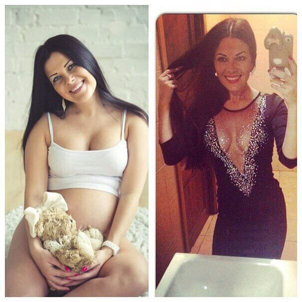

А. Заркова Здравейте, днес ние ще говорим за това, как можете да отслабнете по безопасен начин за здравето, това, което може да направи всеки, на всяка възраст, т.е. това, което е, като правило, постижимо благодарение на упорит труда.

А. Заркова Наскоро в нашата програма, ние говорихме с диетолога Евгени Баев за методите за отслабване. За съжаление, много хора, които се борят с наднорменото тегло, много лошо са използвали някои от нашите съвети, които са оказали негативно влияние върху тяхното здраве. Днес, ние ще говорим за това.
А. Заркова Както може би вече сте се досетили, днес, ние ще говорим за това, как да се предпазите от анорексия, мерките, които някои хора полагат, за да отслабнат. Днес, кандидатът на медицинските науки Евгени Баев, ще ни разкаже за това:

Е. Баев Като цяло, причините за анорексията са определени диети, които спазват младите хора, за да отслабнат. Но се оказа, че те не са единствената причина.
А. Заркова Какво друго би могло да бъде причина за тези ужасни диети?
Е. Баев Както знаете, няколко месеца след като говорихме за препарата Reduslim, започнах да получавам оплаквания от жени, които са свалили твърде много килограми и сега не знаят какво да правят със своите изтощени тела.

Ето няколко снимки на момичетата, които са се свързали с нас и са обвинили предаването, след като говорихме в него за лекарството Reduslim
Е. Баев Проблемът е в това, че Reduslim е най-мощната естествена горелка на мазнини от тези, които в момента съществуват в света на диетологията.
Причината, поради която жените се стигнали до анорексия, е в това, че комбинирането на капсулите Reduslim с някаква диета може да има сериозни последици. До края на краищата, станало, каквото станало. В резултат на това, жените с тегло от 80 до 100 кг са станали стройни като фиданки по 50 килограма за 60 дни.
А. Заркова Много е тъжно, че един толкова ефективен продукт е бил използван от някои жени по толкова неправилно. Но аз се питам: каква е причината за този неочакван резултат?
Е. Баев Това е справедлив въпрос. Бих искал да обсъдим това подробно. Reduslim е натурален продукт, който ускорява обмяната на веществата в организма по естествен начин. Не съдържа модифицирани компоненти! Темпото на живот, при употребата му, се увеличава, благодарение на по-добрия метаболизъм и по-голямата употреба на енергия, което води до бързото изгаряне на мазнините.
А. Заркова: Всъщност, свойства на този продукт са просто невероятни. Какво може, кое може да бъде опасно за хората, които искат да отслабнат?
Е. Баев Ние стигаме до извода: Основната опасност са диетите. При употребата на препарата Reduslim не трябва да спазвате диети, тъй като мастните натрупвания изчезват при всички случаи. Организмът има нужда от микроелементите и минералите, получени от храната.

50 кг40 кг30 кг
А. Заркова Евгени, напълно съм съгласна с Вас, и все повече и повече жени се сблъскват с този проблем. Въпреки това, какво препоръчвате на хората, които искат да отслабнат и какво трябва да се направи, за да се избегне този проблем?
Е. Баев Предполагам, в този случай най-ефективният метод е просто да си поставите цел: от самото начало решете колко трябва да бъде нормалното Ви тегло! Да речем, има хора, които тежат 80 кг и ще се чувстват щастливи, ако станат 55. За да се постигне тази цел, като се има предвид обмяната на веществата, Reduslim трябва да се взема в продължение на месец и половина, но в никакъв случай повече. В този случай трябва да се взема в продължение на месец и половина, като в същото време можете да ядете това, което искате и когато стигнете до 55 кг, трябва да спрете да взимате лекарството Reduslim. Но ако не сте постигнали целта си, можете да продължите да го взимате. По този начин, вие ще постигнете това, което искате, но без да прекалявате.
Коментари на други лекари
 А. В. Стоянов специалист, кандидат на медицинските науки, личен диетолог в лаборатория към изследователския център за Хранене и Диететика лекарството
А. В. Стоянов специалист, кандидат на медицинските науки, личен диетолог в лаборатория към изследователския център за Хранене и Диететика лекарството
Reduslim
съдържа естествени съставки, които ускоряват обменните процеси до 5-7 пъти. Това кара тялото бързо да изразходва целия запас от мазнини и не се образуват нови мастни натрупвания. Мисля, че за сега лекарството Reduslim е единственият начин за ефективно и безопасно, за здравето, отслабване..


Мнения на нашите читатели: (22)
Анна, както винаги, винаги дава най-добрите съвети, минаха 3 седмици, откакто свърших да отслабвам с помощта на лекарството Reduslim, и се отървах от 14 кг. Ще оставя снимка тук:
Теглото ми се спря на 48 кг и повече не се увеличава. Благодаря!

Напълно съм съгласна. Това е супер лекарство за отслабване и когато изведнъж, ставайки сутрин, бам, виждате, че сте свалили още 1-2 кг, животът ще заиграй с други цветове!
Това е натурален продукт, Имам диабет и алергии към различни медикаменти, включително антибиотици, но искам да отслабна!
Да, този продукт е напълно натурален. Един от моите пациенти страда от диабет и аз му препоръчах да взима лекарството Reduslim в продължение на един месец. Той успя да свали 19 кг и не е имал никакви усложнения. напротив, нивото на захарта леко намаля, което е пряко свързано с отслабването.

Винаги съм мечтала да отслабна ... Открих лекарството Reduslim преди 3 месеца, но някак си не можех да се реша да си го купя. Но майка ми ме убеди и той се оказа невероятно ефективен!
Бих искала да изразя своята огромна благодарност към създателите на проекта и, по-специално, към Анна. Свалих 30 килограма и победих рака. Съпругът ми започна да обръща внимание на тялото ми и моя сексуален живот ... значително се подобри! Взимайте лекарството Reduslim според инструкциите на опаковката
БЛАГОДАРЯ ВИ ОТНОВО!!!
Аз също опитах лекарство Reduslim и сега бих казала, че то спаси моето семейство и моя брак. Това е чудо! Съпругът ми започна да гледа на мен като на жена и аз придобих увереност в себе си. Сега съм много по-щастлива!

Благодаря ви за отзивите ... Моята пратка дойде! Reduslim наистина много ме мотивира! Достатъчно беше да отслабна и най-накрая да се отърва от своите ужасни бръчки. Обещавам да напиша резултатите си!
Много се радвам, че намерих тази статия! Опитах много различни лекарства за отслабване, но, за съжаление, резултатите никога не са били задоволителни. Висока съм 162 см и тежа 105 кг. Това е истинска лична трагедия ...! Бих искала да сваля 35 кг. Много се надявам, че лекарството Reduslim действа! Всъщност хареса ми това, че е натурален продукт
Получих поръчката си с Reduslim вчера. Доставката по пощата отне повече от седмица! Операторът ми се обади, за да провери адреса за доставка и получих текстово съобщение от магазина, и веднага отидох до пощата, взех го, и още от днес ще започна да отслабвам :)) Трябваше да го предам на пощальона! Това отне доста време ... във всеки случай, вече започнах да губя килограми! Благодаря на Анна за нейната статия и за линка за за поръчване на стоката на официалния сайт. По дяволите, чакам с нетърпение резултатите!
Благодаря на Анна Заркова, Евгени Баев и, разбира се, на производителите на лекарството Reduslim. Теглото ми намаля доста бързо, но важното е, че аз не се каня пак да надебелявам. Това е някакво чудо! Сега препоръчвам това лекарство на всичките си приятели

Опитах Reduslim и след 5 седмици отслабнах с 24 кг. Нямаше да повярвам, ако не го бях видяла със собствените си очи ... благодаря ... удивително е колко много хора допринасят за разпространението на този продукт по света. Той помага на много хора

Мария и Виктория, вие много сте отслабнали, препоръчвам ви да се консултирате с лекар.
Боже мой, видях резултатите ... Вчера се притеглих и на мен много ми хареса това, което видях
Поръчах 2 опаковки от лекарството Reduslim! Той ми стана приятел. Методът е страхотен, само за един месец успях да сваля почти 18 кг. Ура! Това е моята лична победа! Гордея се със себе си!!!
И все пак, що се отнася до въпросите, зададени по-горе, имам алергия към много неща, но аз нямах никаква реакция.

Потвърждавам, че този метод работи. Моят приятел отслабна с лекарството Reduslim, и трябва да кажа, че свалиха 19 кг за един месец, и смятам, че това е страхотно!
Благодаря на всички за снимките, сега искам да направя поръчка и да започна да отслабвам. Всичките ми страхове изчезнаха :) Утре започва моят нов живот.
Този Reduslim е истинско съвременно чудо! Свалих 17,5 кг за един месец! Без никакви диети! Сега той стана моя най-добър приятел! Станах хубава девойка!
Един добър препарат! Само него взимах и отслабвах, дори когато спях!
Ефектът е просто страхотен! Осъзнах, че не ми се яде нищо сутрин или вечер! И трябва ли да спазвам диета?
Емилия, не сте разбрали правилно. Едно от предимствата на отслабването с лекарството Reduslim е в това, че няма постоянно да изпитвате глад, защото в противен случай отново ще върнете всички свалени килограми. С този продукт ще запазите постигнатите резултати: загубените килограми, повече не се връщат. Оставям ви резултатите, изпратени от наш читател от Германия

Преди 22 дни получих пратката с лекарството Reduslim. Свалих 27,3 кг. Започнах да отслабвам от 93 кг, и сега тежа 65,7. Чувствам се много комфортно в новото ми тяло. Препоръчвам да го опитат тези, които имат трудности със загубата на тегло
Аз наистина спешно трябва да сваля 14 кг, и, съдейки по коментарите, имам шанс да постигна това. Искам да направя поръчка и да започна да взимам лекарството Reduslim в съответствие с препоръките на Анна Заркова. Харесва ми, че това е натурален продукт. Пожелайте ми късмет, защото имам нужда от него.
Здравейте на всички, аз отслабнах, използвайки лекарството Reduslim. Сестра ми го донесе преди година от Лондон. Предполагам, че в този момент той не се продаваше тука ... честно казано, никога не мислех, че ще получи такива резултати. Мислех си, че това е някаква глупост, и не исках да започна да го пия, но сестра ми ме убеди. Започнах да го вземам, и много скоро ми се наложи да ходя по магазините, защото имах нужда от нови дрехи. Панталоните буквално ми падаха :))) до средата на месеца успях да сваля 13 кг (започнах с 67 и отслабнах до 54 кг). Сега теглото ми се стабилизира и ситуацията е под контрол, да кажа, че съм щастлива, е меко казано !! :)) Препоръчвам на всички да опитат! Поне 2 седмици. Вие ще видите резултатите със собствените си очи

Бих искала да изразя своята благодарност на Анна (според мен е най-добрия диетолог в света) и хората, които са написали отзиви за препарата Reduslim. Сигурна съм, че тази статия е била полезна за всички онези момичета, които искат да се отърват от излишните си килограми! Аз съм на 33 години и през последните няколко години имах много проблеми, заради наднорменото си тегло. Понякога дори ми беше трудно да дишам, имах болки в ставите. През цялото време бях уморена и винаги съм знаела, че причината за всичко това е моето тегло. Тази статия наистина не ме убеди. Но после реших да поръчам лекарството Reduslim и да го пробвам. Резултатите, които получих, надминаха всичките ми очаквания! Сега тежа 62 кг. Преди това теглото мибеше 93 кг! За два месеца отслабнах с 31 кг! Купих си това количество, което ми беше препоръчано от консултанта на сайта. На седмото небе съм от щастие! Чувствам, че тялото ми стана много по-леко. Чувствам се с 10 години по-млада! Сега дишам свободно, ставите и гърба вече не ме болят и като цяло се чувствам много по-добре! Много благодаря!